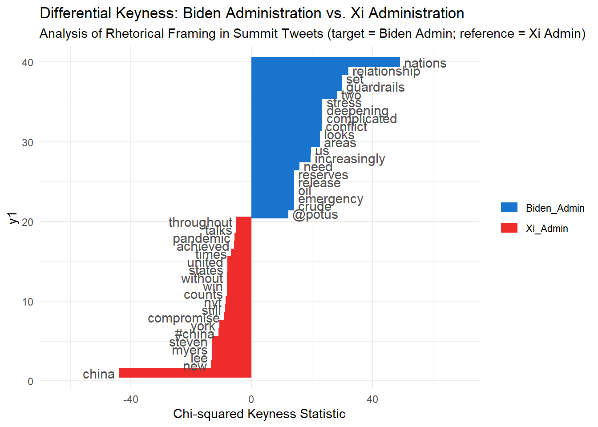

suppressPackageStartupMessages({
library(httr2)
library(jsonlite)
library(readr)
library(dplyr)
library(stringr)
library(quanteda)
library(quanteda.textstats)
library(quanteda.textplots)
library(ggplot2)
})Warning: package 'httr2' was built under R version 4.5.3Warning: package 'jsonlite' was built under R version 4.5.3Warning: package 'readr' was built under R version 4.5.3Warning: package 'dplyr' was built under R version 4.5.3Warning: package 'stringr' was built under R version 4.5.3Warning: package 'quanteda' was built under R version 4.5.3Warning: package 'quanteda.textstats' was built under R version 4.5.3Warning: package 'quanteda.textplots' was built under R version 4.5.3Warning: package 'ggplot2' was built under R version 4.5.3api_key <- Sys.getenv("GOVINFO_API_KEY")
if (api_key == "") {
warning("GOVINFO_API_KEY environment variable not set. Falling back to DEMO_KEY (subject to strict rate limits).")
api_key <- "DEMO_KEY"
}
save_dir <- "govInfo_CPD_Xi"
if (!dir.exists(save_dir)) {
dir.create(save_dir, recursive = TRUE)
}
search_query <- 'collection:(CPD) AND "Xi Jinping" AND publishdate:range(2021-01-20,)'
all_records <- list()
offset_mark <- "*"
page_size <- 100
page_count <- 1
total_count <- NA
repeat {
message(sprintf("--> Fetching page %d (offsetMark: %s)...", page_count, offset_mark))
req_body <- list(
query = search_query,
pageSize = page_size,
offsetMark = offset_mark,
sorts = list(list(field = "publishdate", sortOrder = "DESC"))
)
resp <- tryCatch({
request("https://api.govinfo.gov/search") |>
req_url_query(api_key = api_key) |>
req_body_json(req_body) |>
req_perform() |>
resp_body_json()
}, error = function(e) {
message("Error during API request: ", conditionMessage(e))
NULL
})
if (is.null(resp) || is.null(resp$results) || length(resp$results) == 0) {
message("No more records returned from API.")
break
}
if (is.na(total_count) && !is.null(resp$count)) {
total_count <- resp$count
message(sprintf("Total matching CPD documents identified in GovInfo: %d", total_count))
}
batch <- resp$results
all_records <- c(all_records, batch)
message(sprintf(" Retrieved %d records (running total: %d of %s)",
length(batch), length(all_records), ifelse(is.na(total_count), "?", as.character(total_count))))
next_offset <- resp$offsetMark
if (is.null(next_offset) || next_offset == offset_mark ||
(!is.na(total_count) && length(all_records) >= total_count)) {
message("Reached final page of search results.")
break
}
offset_mark <- next_offset
page_count <- page_count + 1
Sys.sleep(0.5) # politeness buffer
}--> Fetching page 1 (offsetMark: *)...Total matching CPD documents identified in GovInfo: 351 Retrieved 100 records (running total: 100 of 351)--> Fetching page 2 (offsetMark: AoJw4I72sJkDLkRDUEQtMjAyNTAwOTI5)... Retrieved 100 records (running total: 200 of 351)--> Fetching page 3 (offsetMark: AoJw4K32nIwDLkRDUEQtMjAyMzAxMDc4)... Retrieved 100 records (running total: 300 of 351)--> Fetching page 4 (offsetMark: AoJw4NO84P8CLkRDUEQtMjAyMjAwMjA4)... Retrieved 51 records (running total: 351 of 351)Reached final page of search results.download_log <- lapply(seq_along(all_records), function(i) {
item <- all_records[[i]]
pkg_id <- item$packageId
pdf_url <- if (!is.null(item$download$pdfLink)) {
item$download$pdfLink
} else {
paste0("https://api.govinfo.gov/packages/", pkg_id, "/pdf")
}
file_name <- paste0(pkg_id, ".pdf")
dest_path <- file.path(save_dir, file_name)
if (file.exists(dest_path) && file.size(dest_path) > 0) {
status <- "Already Downloaded"
} else {
status <- tryCatch({
request(pdf_url) |>
req_url_query(api_key = api_key) |>
req_perform(path = dest_path)
"Success"
}, error = function(e) {
conditionMessage(e)
})
Sys.sleep(0.2)
}
data.frame(
index = i,
package_id = pkg_id,
date_issued = if (!is.null(item$dateIssued)) item$dateIssued else NA_character_,
title = if (!is.null(item$title)) item$title else NA_character_,
collection = if (!is.null(item$collectionCode)) item$collectionCode else "CPD",
pdf_url = pdf_url,
file_path = dest_path,
size_mb = if (file.exists(dest_path)) round(file.size(dest_path) / (1024^2), 2) else NA_real_,
status = status,
stringsAsFactors = FALSE
)
})
download_table <- do.call(rbind, download_log)
metadata_file <- file.path(save_dir, "cpd_xi_jinping_collection_log.csv")
write.csv(download_table, metadata_file, row.names = FALSE)
print(head(download_table[, c("package_id", "date_issued", "title", "size_mb", "status")], 10), row.names = FALSE) package_id date_issued
DCPD-2026DIGEST 2026-10-16
DCPD-2026CHECKLIST 2026-10-16
DCPD-202600638 2026-09-24
DCPD-202600636 2026-09-24
DCPD-202600635 2026-09-23
DCPD-202600631 2026-09-22
DCPD-202600630 2026-09-22
DCPD-202600620 2026-09-18
DCPD-202600601 2026-09-12
DCPD-202600598 2026-09-11
title
Digest of Other White House Announcements
Checklist of White House Press Releases
Remarks at a State Dinner Honoring President Xi Jinping of China
Remarks at a Welcoming Ceremony for President Xi Jinping of China
Remarks in an Exchange With Reporters Upon Arrival From Joint Base Andrews, Maryland
Remarks Prior to a Meeting With Prime Minister Sanae Takaichi of Japan and an Exchange With Reporters in New York City
Remarks Following a Meeting With Prime Minister Andy Burnham of the United Kingdom and an Exchange With Reporters in New York City
Remarks on Prescription Drug Prices and an Exchange With Reporters
Remarks to United States Embassy Personnel and Business Leaders in Dublin, Ireland
Presidential Determination on Major Drug Transit or Major Illicit Drug Producing Countries for Fiscal Year 2027
size_mb status
0.80 Already Downloaded
0.33 Already Downloaded
0.24 Already Downloaded
0.23 Already Downloaded
0.24 Already Downloaded
0.23 Already Downloaded
0.26 Already Downloaded
0.34 Already Downloaded
0.28 Already Downloaded
0.25 Already Downloaded### Pt2
summit_url <- "https://raw.githubusercontent.com/datageneration/datamethods/master/textanalytics/summit_11162021.csv"
summit <- read_csv(summit_url, show_col_types = FALSE)
summit_clean <- summit %>%
filter(!is.na(text) & text != "") %>%
filter(is.na(lang) | lang == "en") %>%
distinct(text, .keep_all = TRUE)
tweet_corpus <- corpus(summit_clean, text_field = "text")
custom_stops <- c(
stopwords("english"),
"rt", "https", "t.co", "amp", "via", "re", "co", "http",
"u", "ur", "tweet", "twitter", "video", "photo", "status"
)
toks <- tokens(
tweet_corpus,
remove_punct = TRUE,
remove_symbols = TRUE,
remove_numbers = TRUE,
remove_url = TRUE
) %>%
tokens_tolower() %>%
tokens_remove(custom_stops)
xi_kwic <- kwic(toks, pattern = "xi", window = 5)
cat(sprintf("Total occurrences of 'xi' in summit tweets: %d\n", nrow(xi_kwic)))Total occurrences of 'xi' in summit tweets: 3314print(head(as.data.frame(xi_kwic)[, c("pre", "keyword", "post")], 10), row.names = FALSE) pre keyword
president biden communist china leader xi
biden urges guardrails conflict virtual xi
president joe biden chinese counterpart xi
biden opens virtual summit china's xi
breakthrough first virtual summit biden xi
held virtual summit chinese president xi
joe biden xi
china unleashing covid-19 world summit xi
#xijinping virtual summit #biden told xi
bosses you’ll realize just condescending xi
post
jinpig pledged virtual summit improve
summit
jinping expected discuss damage control
white house #breakingnews #biden #china
biden said u.s.will work dvance
jinping historic meeting man runs
jinping kick virtual summit expected
jinping
#america sever relations impose severe
biden summit interaction especially oldxi_phrase_kwic <- kwic(toks, pattern = phrase("xi jinping"), window = 5)
cat(sprintf("\nTotal occurrences of phrase 'xi jinping': %d\n", nrow(xi_phrase_kwic)))
Total occurrences of phrase 'xi jinping': 1202print(head(as.data.frame(xi_phrase_kwic)[, c("pre", "keyword", "post")], 10), row.names = FALSE) pre keyword
president joe biden chinese counterpart xi jinping
held virtual summit chinese president xi jinping
joe biden xi jinping
china unleashing covid-19 world summit xi jinping
president joe biden chinese president xi jinping
hold virtual summit chinese president xi jinping
us maintaining close communication facilitate xi jinping
president biden tells chinese president xi jinping
joe biden criticised decision president xi jinping
joe biden xi jinping
post
expected discuss damage control rather
historic meeting man runs united
kick virtual summit expected last
monday
joe biden virtual summit chinese
looking forward candid forthright discussion
attend glasgow summit accusing china
discuss complex nature ties twomulti_kwic <- kwic(toks, pattern = c("xi", "biden", "summit", "taiwan"), window = 4)
print(head(as.data.frame(multi_kwic)[, c("keyword", "pre", "post")], 12), row.names = FALSE) keyword pre post
biden breaking news us president communist china leader xi
xi biden communist china leader jinpig pledged virtual summit
summit xi jinpig pledged virtual improve cooperation china offered
biden recap urges guardrails conflict virtual
xi urges guardrails conflict virtual summit
summit guardrails conflict virtual xi
biden u.s president joe chinese counterpart xi jinping
xi joe biden chinese counterpart jinping expected discuss damage
summit key differences main focus later today washington time
biden #breaking opens virtual summit china's
summit #breaking biden opens virtual china's xi white house
xi opens virtual summit china's white house #breakingnews #biden# g_dispersion <- textplot_xray(
# kwic(toks, pattern = "xi"),
# kwic(toks, pattern = "biden"),
# kwic(toks, pattern = "summit"),
# kwic(toks, pattern = "taiwan")
# ) +
# theme_bw() +
# labs(title = "Lexical Dispersion of Summit Keywords Across Tweet Stream",
# x = "Token Position in Corpus", y = "Keyword")
# print(g_dispersion)
biden_regex <- "\\b(biden|joe|potus|whitehouse|washington|us|u\\.s|usa|america|american)\\b"
xi_regex <- "\\b(xi|jinping|china|chinese|beijing|ccp|prc)\\b"
raw_texts <- tolower(as.character(tweet_corpus))
has_biden <- str_detect(raw_texts, biden_regex)
has_xi <- str_detect(raw_texts, xi_regex)
docvars(tweet_corpus, "admin_focus") <- case_when(
has_biden & !has_xi ~ "Biden_Admin",
!has_biden & has_xi ~ "Xi_Admin",
has_biden & has_xi ~ "Bilateral",
TRUE ~ "Other"
)
cat("Distribution of tweets by administration focus:\n")Distribution of tweets by administration focus:print(table(docvars(tweet_corpus, "admin_focus")))
Biden_Admin Bilateral Other Xi_Admin
82 4424 264 133 contrast_corpus <- corpus_subset(tweet_corpus, admin_focus %in% c("Biden_Admin", "Xi_Admin"))
contrast_toks <- tokens(
contrast_corpus,
remove_punct = TRUE,
remove_symbols = TRUE,
remove_numbers = TRUE,
remove_url = TRUE
) %>%
tokens_tolower() %>%
tokens_remove(c(custom_stops, "biden", "xi", "jinping", "president", "summit", "virtual"))
contrast_dfm <- dfm(contrast_toks) %>%
dfm_trim(min_termfreq = 3) %>%
dfm_group(groups = admin_focus)
keyness_biden_vs_xi <- textstat_keyness(contrast_dfm, target = "Biden_Admin", measure = "chi2")
cat("\nTop 15 distinctive features for the Biden Administration (positive chi2):\n")
Top 15 distinctive features for the Biden Administration (positive chi2):print(head(keyness_biden_vs_xi, 15), row.names = FALSE) feature chi2 p n_target n_reference
nations 49.16747 2.350120e-12 28 1
relationship 32.05326 1.500035e-08 19 1
guardrails 30.02292 4.269695e-08 16 0
set 30.02292 4.269695e-08 16 0
two 28.28791 1.045469e-07 32 12
complicated 23.43655 1.291024e-06 14 0
deepening 23.43655 1.291024e-06 14 0
stress 23.43655 1.291024e-06 14 0
conflict 23.25370 1.419768e-06 19 4
areas 22.65790 1.935631e-06 14 1
looks 22.65790 1.935631e-06 14 1
us 19.67849 9.162673e-06 12 0
increasingly 19.58965 9.598761e-06 14 2
need 15.87721 6.758757e-05 16 5
crude 14.06860 1.762623e-04 9 0cat("\nTop 15 distinctive features for the Xi Administration (negative chi2 / reference):\n")
Top 15 distinctive features for the Xi Administration (negative chi2 / reference):print(tail(keyness_biden_vs_xi, 15), row.names = FALSE) feature chi2 p n_target n_reference
states -7.992695 4.696646e-03 1 19
united -7.992695 4.696646e-03 1 19
counts -8.137653 4.335537e-03 0 15
win -8.137653 4.335537e-03 0 15
without -8.137653 4.335537e-03 0 15
nyt -8.637776 3.292631e-03 2 24
still -8.685178 3.208083e-03 0 16
compromise -9.233335 2.376484e-03 0 17
york -10.699596 1.071589e-03 1 24
#china -10.881617 9.712341e-04 0 20
lee -13.088255 2.971530e-04 0 24
myers -13.088255 2.971530e-04 0 24
steven -13.088255 2.971530e-04 0 24
new -13.437176 2.466866e-04 1 29
china -43.913095 3.432843e-11 0 78# Comparison plot
keyness_plot <- textplot_keyness(
keyness_biden_vs_xi,
n = 20,
margin = 0.2,
color = c("dodgerblue3", "firebrick2")
) +
theme_minimal() +
labs(
title = "Differential Keyness: Biden Administration vs. Xi Administration",
subtitle = "Analysis of Rhetorical Framing in Summit Tweets (target = Biden Admin; reference = Xi Admin)",
x = "Chi-squared Keyness Statistic"
)
# Display plot
print(keyness_plot)